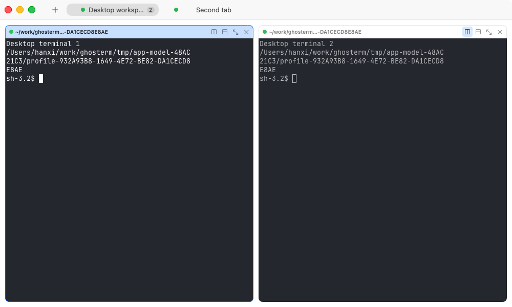
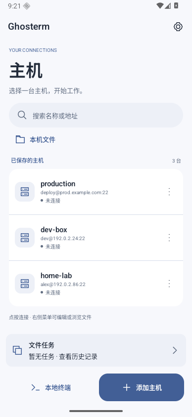
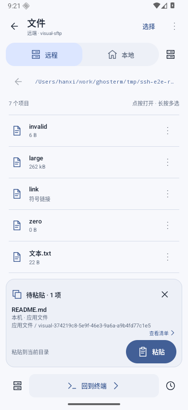

终端，回到原生体验。
macOS 用 full libghostty 与 Metal，Android 用 libghostty-vt 与 Canvas。各端原生 UI，终端引擎和传输各司其职。
从本机命令行，到远端的每一个文件。
Ghosterm 将 libghostty 终端、SSH 配置和 SFTP
带进同一个原生工作空间。

原生视图测试截图 · 隔离本地 PTY · 2026-10-29 历史界面。截图来源与收据 ↗
macOS 用 full libghostty 与 Metal，Android 用 libghostty-vt 与 Canvas。各端原生 UI，终端引擎和传输各司其职。
围绕 ssh_config 管理连接，保留注释、未知指令与配置顺序。用可视界面整理主机，让终端与文件浏览各自建立独立连接。
浏览本机与远端 SFTP，在终端和文件之间切换。Android 还接入系统文件授权、复制清单和任务历史。
打开即用普通 PTY 或 SSH。需要后台会话时，再显式选择 tmux；远端需预先安装支持版本。
Android 原生主机管理、SSH 终端与文件浏览。点按打开、长按选择；复制前看清单，执行后看结果。
了解 Android 版 ↗API 36 原生应用测试截图；主机为示例数据，文件页连接隔离 SFTP。历史界面不代表最新版本的全部布局。


Ghosterm 正在开发中。欢迎试用，也欢迎带着问题回来。
Apple Silicon · arm64
最低系统以随包 BUILD-INFO 为准。
Android 10 及以上 · arm64-v8a
独立 APK，通过 GitHub Releases 分发。
当前提供 macOS 与 Android 开发版。iOS、Windows、Linux、HarmonyOS 与 Web 客户端尚未交付。各平台能力及已知缺口请查看能力矩阵；滚动下载的版本以各端构建收据为准。
阅读代码，报告问题，或者一起把下一处细节做好。
在 GitHub 上参与 ↗